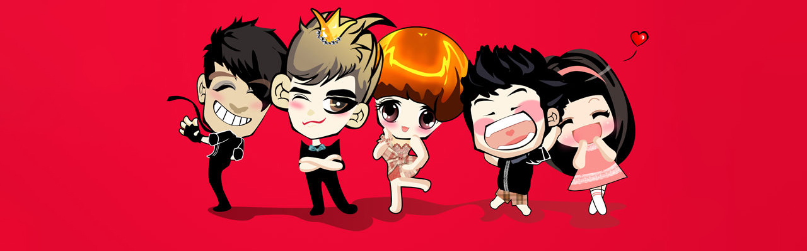
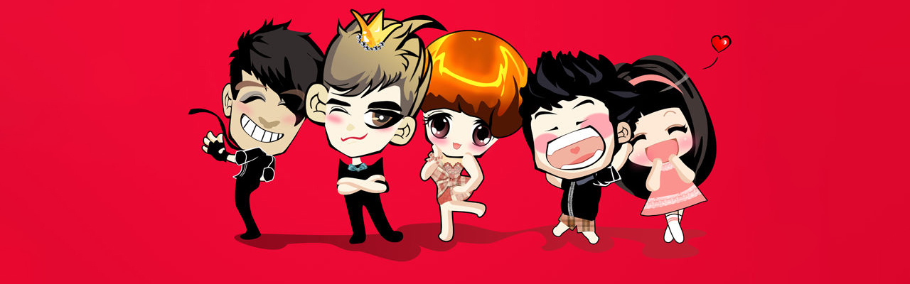
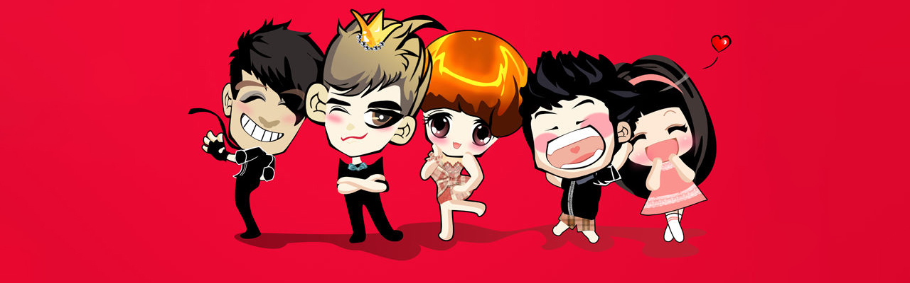
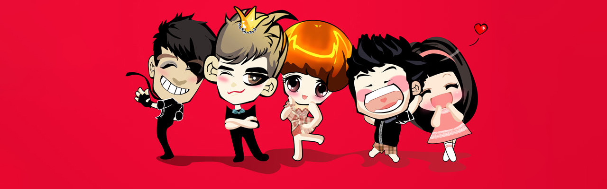

谢娜，1981年5月6日出生于四川省德阳市中江县，毕业于四川师范大学电影电视学院（今四川电影电视学院），中国内地主持人、歌手、影视女演员。
1996年，谢娜拍摄了个人第一部电影《青年刘伯承》。2002年，因主持湖南卫视嘉宾访谈游戏秀节目《快乐大本营》被观众熟知。2008年，参演古装武侠剧《射雕英雄传》。2013年，主演喜剧片《快乐大本营之快乐到家》；同年，她还获得中国大学生电视节最受大学生喜爱的电视节目主持人奖。2015年，参加明星生活体验秀节目《偶像来了》；同年，她还主持了两季伪音乐类纯网络综艺节目《偶滴歌神啊》。2016年，除了主持喜剧脱口秀节目《娜就这么说》和剧情式吐槽脱口秀《暴走法条君》；谢娜还参加了明星女神生活体验真人秀《我们来了》。2017年，主持儿童智趣才艺脱口秀节目《神奇的孩子》；随后，以补位歌手的身份加盟明星跨界音乐真人秀节目《跨界歌王第二季》并获得亚军。
谢娜出生在四川省德阳市中江县一个文艺家庭，父母都是当地的文艺骨干，母亲曾是中江县曲艺团的舞蹈演员。谢娜就读城北中学期间，利用课余时间发挥特长，被选为文艺部长，在学校的文艺汇演上第一次主持，还组织同学们编排各种舞蹈，参加演讲比赛，参加校排球队。1994年，年仅14岁的她参加中江县演讲比赛便获得二等奖的成绩。1995年，她参加全国第二届影视表演推新人大赛并表演节目《蝴蝶梦》，因其普通话不标准，在初赛就被淘汰。1998年，谢娜毕业于四川师范大学电影电视学院（今四川电影电视学院）表演与节目主持专业，同年，参加全国第五届影视表演推新人大赛，随后获得影视表演十佳金奖（即冠军）。
1996年，谢娜出演个人第一部电影《青年刘伯承》，在片中饰演刘伯承的女儿。
2000年8月，参演现代都市生活剧《幸福街》；同年，她还参演武侠喜剧《武状元苏灿》，并在剧中饰演丫鬟朝霞。
2004年，与何炅共同主演喜剧片《想吃麻花现给你拧》；10月29日，与佟大为合作出演的爱情剧《夏天的味道》在央视电视剧频道播出，她在剧中饰演聪明机智、为人耿直的方平。
……
2012年，再次与赖声川导演合作参演舞台剧《十三角关系》，她在剧中饰演知名电台主持人花姐 [39] ；3月16日，与郑中基、梁咏琪领衔主演的爱情片《嫁个100分男人》上映，她在片中饰演心直口快、向往爱情的女孩丽琪；7月12日，谢娜开始与何炅搭档主持明星模仿明星类综艺节目《百变大咖秀》。
2018年5月5日，在播出的《快乐大本营》中，谢娜获得吉尼斯世界纪录“第一个累计粉丝数量达到1亿的微博账户”和“粉丝数最多的微博账户”两项称号，当场获颁了两个吉尼斯证书。